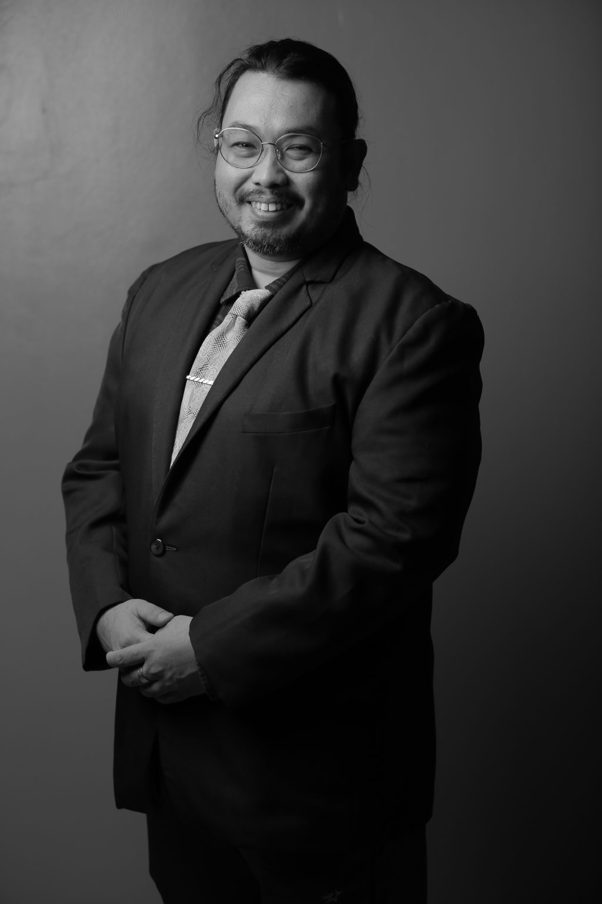

- Our Mentor -

QUICK FACTS AT DYCI
Role
Professor and Mentor
Department
Former Department Chairperson of CCS / T.E.C.H.
Program
Former Head of BSCPE Program
Portfolio
henrydeguzman.site >Henry L. De Guzman is a professional computer engineer, IT manager, educator and researcher with more than 26 years of experience in higher education and technology. At DYCI he served as department chairperson of CCS / TECH and head of the BSCpE program, leading Computer Engineering, Computer Science and Information Technology programs and helping build their curricula. A licensed Professional Computer Engineer with a master's in computer engineering, he is also a Doctor of Engineering in Engineering Management candidate with published, indexed research on Society 5.0, IoT and blockchain. Beyond academia, he volunteers his skills to support Indigenous communities through technology. He is the mentor behind this website.
A Professional Computer Engineer
A licensed Professional Computer Engineer (PCpE) with a master's in computer engineering, he is also IT Manager and Consultant at Onesys PrimeSolution Co., overseeing school ERP and accounting systems. His expertise spans AI, IoT, data analytics, software engineering, cloud technologies and web development.
A Teacher
For more than two decades he has taught web development, systems analysis and design, and computer engineering. He has led Computer Engineering, Computer Science and Information Technology programs as Program Chairperson, Department Head and Officer-in-Charge Dean, and helped build the curricula of the programs he led.
A Researcher
He is a published author with Scopus- and Web of Science-indexed work on Society 5.0, community development, IoT, blockchain and higher education innovation, and a Doctor of Engineering in Engineering Management candidate. In 2025 he presented his DNA Community 5.0 Framework at the Asian Graduate Studies Summit in Ho Chi Minh City, Vietnam.
A Community Innovator
He is a community volunteer who uses technology to support Indigenous communities, from the Dumagat of the Sierra Madre to the Mangyan of Mindoro, through multimedia and community engagement projects. His community work has earned him institutional service awards.